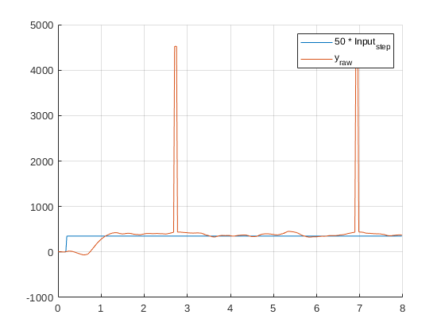
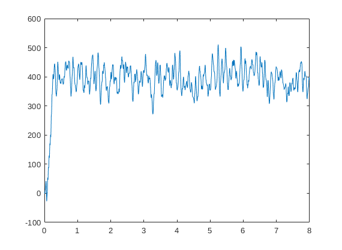
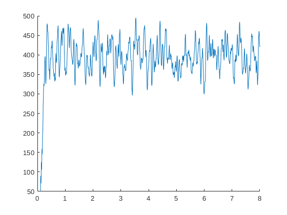
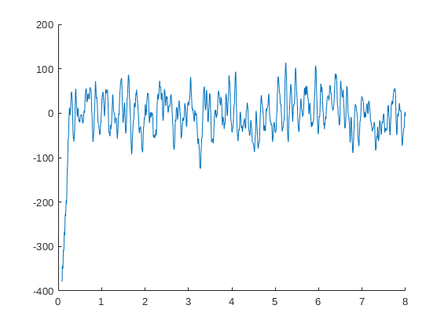

Contents
Assignment 1
clear; clc;
fs = 44;
dt = 1/fs;
t_gen = 0:dt:8-dt;
ut =7*uGen(t_gen, "step",1,9);
Ut = genU(ut);
yraw = exciteSystem(5360188, Ut, fs);
ytest = exciteSystem(5360188,ut,fs);
t = 0:dt/(countZeros(ut)+1):(8)-dt/(countZeros(ut)+1);
figure(1);
clf; hold on; grid on;
plot(t_gen,ut*50)
plot(t_gen,ytest)
legend("50 * Input_{step}","y_{raw}")

spikes
y = despike(yraw,10000,fs);
figure(2)
clf; grid on;
plot(t,y)

Timeshift
y = timeshift(y,500,fs);
cutoff = length(yraw)-length(y);
t_shifted = t(cutoff+1:end);
figure(3)
clf; hold on;
plot(t_shifted,y)
clear cutoff;

DC Offset
y = DCoffset(y);
figure(4)
clf; hold on;
plot(t_shifted,y)

Linearity Check
table = [];
for i = 1:20
ut =i*uGen(t_gen, "step",1,9);
Ut = genU(ut);
yt = exciteSystem(5360188, Ut, fs);
iogain = IOgain(ut,yt,fs);
table = [table ; [ut(end) iogain]];
end
clear ut Ut;
fprintf("%-10s | %-20s \n", "input gain","IO Gain");
Functions
function u = uGen(time,type, amp, periods)
dt = time(2)-time(1);
if type=="step"
u = [zeros(periods,1) ; ones(length(time)-periods,1)]*amp;
elseif type == "pulse"
u = [1 ; zeros(length(time)-1,1)];
elseif type == "sine"
u = amp*sin(periods*time*2*pi/(dt*length(time)));
else
u = "Unknown input type";
end
end
function z = countZeros(u)
z = 0;
while u(z+1)==0
z=z+1;
end
end
function U = genU(u)
z = countZeros(u);
sysOrder = z+1;
gain = max(u);
U = gain*ones(sysOrder,length(u));
U(1,:) = u';
for i=2:sysOrder
U(i,:) = [u(i:end)' gain*ones(1,i-1)];
end
end
function y = interp(sig)
done = false;
i = 2;
while ~done
if ~(sig(i) == sig(1))
dy = sig(i)-sig(1);
dx = i;
for j=2:i
sig(j) = sig(j-1)+dy/dx;
end
done = true;
end
i = i+1;
end
y = sig;
end
function y = despike(sig,slope,fs)
spikes = [];
for i = 2:length(sig)
if fs*(sig(i)-sig(i-1))>slope
sig(i) = sig(i-1);
if ~(ismember(i-3,spikes)) && ~(ismember(i-2,spikes))
spikes = [spikes i-1];
end
end
end
for i = 1:length(spikes)
sig = [sig(1:spikes(i)-1) ; interp(sig(spikes(i):end))];
end
y =sig;
end
function y = timeshift(sig,slope,fs)
i = 2;
done = false;
while ~done
if fs*(sig(i)-sig(i-1))>slope && sig(i-1)>=0
sig = sig(i-1:end);
done = true;
end
i = i+1;
end
y =sig;
end
function y = DCoffset(y)
done = false;
i=2;
while ~done
if y(i) > y(i-1) && y(i) > y(i+1) && y(i) >400
sig = y(i:end);
done = true;
end
i = i+1;
end
DC = mean(sig);
y = y-DC;
end
function g = IOgain(u,y,fs)
y = despike(y,10000,fs);
y = timeshift(y,500,fs);
g = mean(y)/mean(u);
end